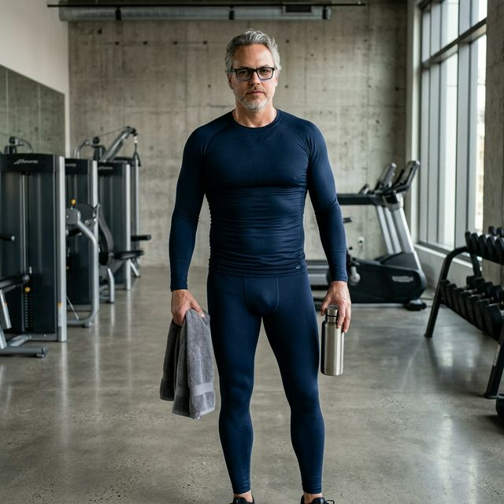

From the Seawall to the boardroom, Vancouver runs on endurance. Elastique is the only wearable with a patented lymphatic activation system built into every fiber—passive circulation support disguised as luxury.
Shop Elastique
Desk-bound hours and long commutes take a toll. That sluggish feeling isn't normal—it's circulation.
Hours of sitting restrict natural movement, leading to afternoon energy crashes and a sense of heaviness.
Vancouver's climate can amplify feelings of stiffness. Your body craves continuous, supportive movement.
Frequent flights and long drives limit mobility, leaving your legs feeling tired and puffy at the end of the day.
Hundreds of precision-placed beads create targeted pressure points across the garment.
As you move naturally, the beads provide a gentle, massage-like sensation, invigorating the skin.
Helps reduce feelings of heaviness and puffiness, promoting a sense of lightness—all without changing your routine.
"As an executive based in Vancouver, I travel constantly. These are the first garments that actually help reduce feelings of puffiness during travel. I arrive feeling refreshed, not depleted."
"I was skeptical of 'wearable wellness', but the micro-massage sensation is undeniable. My legs feel significantly less tired after a 10-hour day in the office."
*Individual results may vary.
Your body optimizes itself while you live your life.
$150/session
Weekly = $7,800/year
Requires taking time out of your busy schedule.
$200
Wear daily, lasts 1+ year
Zero extra minutes in your day.
Shop Now$30-60
Low compliance, clinical aesthetic
No MicroPerle. No style.
Elastique isn't activewear—it's wearable wellness technology. Regular activewear is physiologically inert. Elastique features our patented MicroPerle® system that provides a gentle micro-massage sensation as you move, invigorating the skin and supporting comfort.
Whenever you want passive circulation support. Our clients wear them during flights, long days at the desk, post-workout, or simply running errands around Vancouver. The aesthetic is designed for everyday luxury.